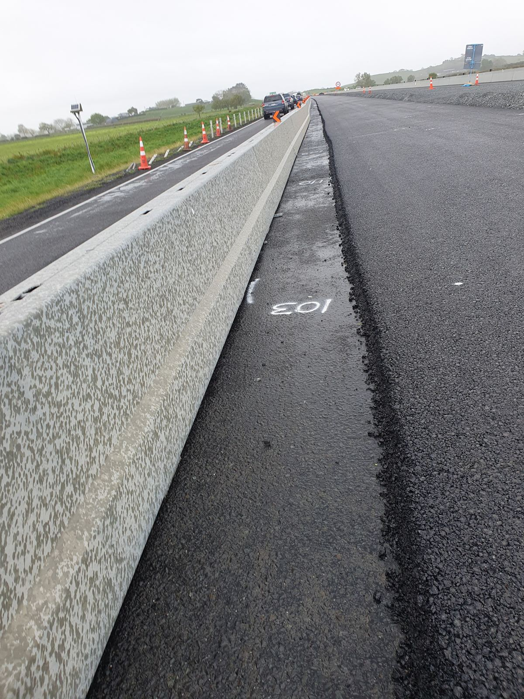

Key Hazards
~4 min (interactive)

Poor weather and low light sharpen every one of these hazards.
Tap each icon below to reveal a hazard you may encounter working near a barrier line.
0 of 6 explored
Vehicle Incursion
Detail: Vehicles can strike or breach a barrier line. Working with your back to traffic increases the risk to you.
Pinch Points
Detail: Connecting pins, lifting points and repositioning heavy segments can crush fingers and hands.
Barrier Failure or Movement
Detail: Barriers can shift, especially water-filled units that are under-filled or have been struck.
Restricted Sightlines
Detail: Barriers can block your view of approaching plant, vehicles or other workers.
Edge Protection Failure
Detail: Where barriers protect a drop-off or excavation, leaning on or removing them creates a fall risk.
Manual Handling Injuries
Detail: Barrier segments are heavy and awkward to move without the right technique or equipment.
By the end of this section you can:
- Name six hazards commonly found around barrier systems
- Explain how each hazard could cause harm
Key Hazards.
Tap each icon below to reveal a hazard you may encounter working near a barrier line.
Vehicle incursion: vehicles can strike or breach a barrier line, and working with your back to traffic increases the risk to you.
Pinch points: connecting pins, lifting points and repositioning heavy segments can crush fingers and hands.
Barrier failure or movement: barriers can shift, especially water-filled units that are under-filled or have been struck.
Restricted sightlines: barriers can block your view of approaching plant, vehicles or other workers.
Edge protection failure: where barriers protect a drop-off or excavation, leaning on or removing them creates a fall risk.
And manual handling injuries: barrier segments are heavy and awkward to move without the right technique or equipment.